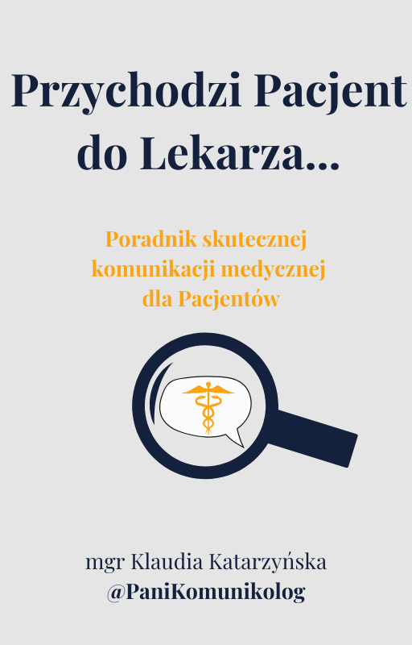

<section class="static-page pb-3">
  <div class="container">
    <h1 class="text-center mb-1/2">Publikacje</h1>
    <p class="mb-2">E-booki i inne publikacje mojego autorstwa. Zapraszam do zapoznania się zarówno pacjentów, jak i personel medyczny.</p>
    <div class="row bg-white standard-shadow p-2 p-3-md publication-card">
      <picture class="align-items-center col-12 col-4-lg d-block d-flex justify-content-center text-center">
        
      </picture>
      <article class="col-12 col-8-lg text-center text-left-lg">
        <h2>Poradnik dla Pacjentów</h2>
        <p c>Każdy z nas czasami pacjentem bywa lub nim jest z powodu coraz częściej dotykających społeczeństwo chorób przewlekłych. Dlatego ważne jest, by zdobyć umiejętność komunikowania się z personelem medycznym, 
          co niewątpliwie przekłada się na jakość i satysfakcję z leczenia.
          W tym e-booku przygotowałam najważniejsze wskazówki dla Pacjentów, które będą efektywne w rozmowach z personelem medycznym.
          Mam nadzieję, że będą one dla Was pomocne, ale życzę Wam również jak najmniej sytuacji, w których będziecie mogli je wykorzystać..
          </p>
          <div class="d-flex justify-content-center justify-content-flex-start-lg">
            <a class="button button-accent btn--wide" title="Pobierz ebooka" href="https://tinyurl.com/mw4x6ju7" target="_blank" rel="noopener"><span>Pobierz</span></a>
          </div>
      </article>
    </div>
  </div>
</section>